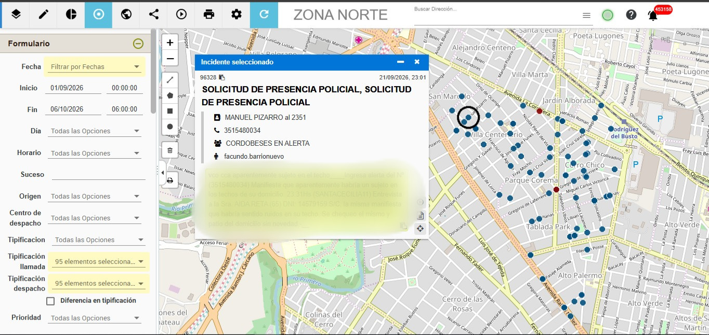

Recepción
Un vecino comunica el hecho por WhatsApp.
DIVISIÓN ANÁLISIS ESTRATÉGICO TERRITORIAL
DIVISIÓN
Creada
25 de marzo del 2026Jefe
Comisario Bracamonte Jorge01 / PRESENTACIÓN INSTITUCIONAL
La División Análisis Estratégico Territorial desarrolla tareas de recopilación, cruce e interpretación de información proveniente de distintas fuentes SAE y SEDEPO, con el objetivo de identificar coincidencias, reconocer patrones delictuales por barrio y determinar horarios críticos.
Información · Análisis · Planificación
02 / COBERTURA TERRITORIAL
El área de cobertura comprende cinco zonas territoriales, con un total de 234 barrios.
Barrios
Barrios
Barrios
Barrios
Barrios
03 / FUENTES DE INFORMACIÓN
El análisis territorial se nutre de información proveniente de distintas fuentes, que permite identificar coincidencias y reconocer patrones.
Sistema de información
Sistema de información
04 / METODOLOGÍA DE TRABAJO
De la información al análisis territorial.
Obtención de información de las fuentes disponibles.
Comparación de datos para identificar coincidencias.
Reconocimiento de patrones delictuales y horarios críticos.
Organización de la información según zonas y barrios.
05 / ANÁLISIS TERRITORIAL
Organización de la información para reconocer patrones y características territoriales.
Identificación de coincidencias según el sector.
Reconocimiento de franjas horarias relevantes.
Relación entre datos provenientes de distintas fuentes.
Organización de la información por zonas y barrios.
UBICACIÓN: Zona Norte - Barrio Villa Centenario
PERÍODO: 01/09/2026 al 06/10/2026

Un vecino comunica el hecho por WhatsApp.
Se abre una carta en el SAE Web.
Se envía un móvil al lugar.
Se evalúa el tipo de hecho y su relevancia.
Se cierra la carta en el sistema.
La información obtenida por el móvil es analizada por el área para identificar las características, la complejidad y la relevancia territorial del incidente.
DIVISIÓN ANÁLISIS ESTRATÉGICO TERRITORIAL